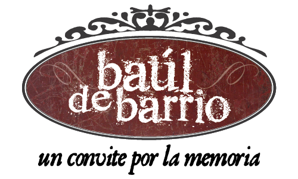

Inicio
Proyecto
Sobre este proyecto
Autores
Colaboradores
Fotografias
Álvaro Ochoa
Henry Ortiz Zapata
Instituto de Crédito Territorial
Luz Mary Trejos
María Elena González Mejía
Maribel Pérez
Sacerdotes Carmelitas
Barrio
Bazares
Biblioteca Tito Brandsma
Derrumbe Efe Gómez
Monumentos
Movimientos
Salones Parroquiales
Semana Santa
Zenobia Osorno
Publicaciones
Procesos Sociales y Políticos
Documentos
Enlaces
Contacto
Baúl de Barrio 2014